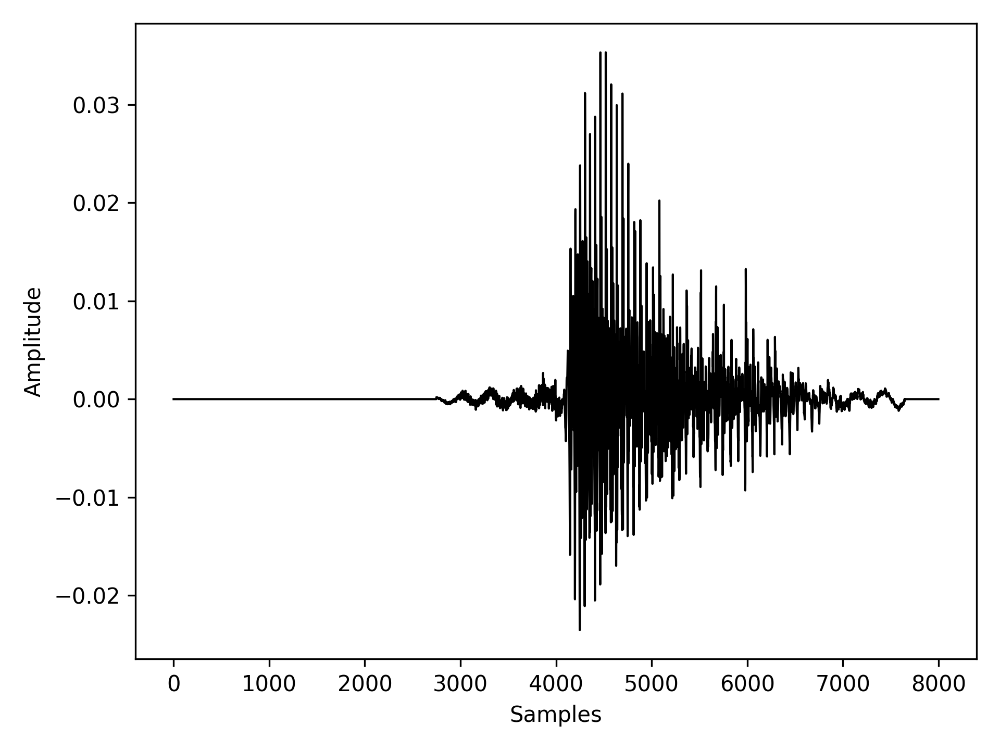

Experiment Report: Did You Train on My Dataset? Towards Public Dataset Protection with Clean-Label Backdoor Insertion
Introduction: After reviewing the paper's GitHub repository (link), we found that the complete experiment code was not provided, particularly for the construction of the poisoned dataset and the poisoning process for the AudioMNIST dataset (link). To address this, we extended the existing code hierarchy and implemented the poisoned dataset construction and poisoning process based on the image experiment code and descriptions in the paper. However, we were unable to replicate the results reported by the authors. Our experimental results differ from those presented in the paper, and the following sections detail the methods and outcomes of our experiments.
Poison Dataset Construction
According to the paper, constructing the poison dataset involves selecting a target class CCC (for example, "five") and poisoning a specific percentage (1%, 5%, 10%, or 20%) of the audio samples belonging to this class. The poisoning process consists of applying an untargeted Projected Gradient Descent (PGD) attack to the audio samples and embedding a trigger, which is a 1% wavelength impulse signal, into the perturbed audio.

Building on the poisoning methodology used in the CIFAR-10 dataset from the paper's GitHub repository for image experiments, we utilized the entire AudioMNIST dataset as our training dataset. We first selected the target class "five" and extracted a copy of 10% of audio samples labeled "five" from the AudioMNIST dataset. For these selected audio samples, we applied the PGD attack using the code provided in the author’s repository, which is based on the Adversarial Robustness Toolbox. The base model for the attack was downloaded from the link shared by the authors (link).
After applying the PGD attack, we embedded the trigger into the perturbed audio as described in the paper and its accompanying GitHub code. Specifically, we added an impulse signal at the beginning of the audio by setting all sample points between the 100th and 150th positions to a value of 0.005. Once the perturbation and trigger were added, the audio samples were designated as the poisoned dataset. For the test dataset, we excluded the chosen percentage of target audio samples from the training dataset. The following figure illustrates the composition of the training, poisoned, and test datasets.

Audio Visualization
In this section, we visualize the original audio waveform, the perturbed audio waveform after applying the PGD attack, and the triggered audio waveform after both the PGD attack and trigger addition. While the perturbations introduced by the PGD attack are subtle and difficult to perceive in the waveform domain, the impulse trigger is clearly visible at the beginning of the waveform. Additionally, we provide the corresponding spectrograms for these audio samples to offer a more detailed frequency-domain analysis.
| Target Audio: | |||
| Process Methods: | Original Audio | Perturbed Audio | Triggered Audio |
| Waveform |  | ||
| Spectrogram |  |
 |
 |
Poison Model Training
Since the paper did not specify the training parameters for the Audio experiment, we adopted the parameters provided for the Image experiment. We trained the RawAudioCNN model from scratch for 10 epochs, with a batch size of 64 for the training data loader. To construct the poisoned dataset, we selected 10% of the "five" audio samples (300 samples), applied the PGD attack, and added impulse triggers to these samples.
Following the logic of the Image experiment, we injected poisoned samples into randomly selected training batches during each epoch. Specifically, a seed was generated to determine which training batches would include poisoned samples. The seed was a list containing 300 unique numbers, randomly generated between 0 and 469 (the total number of batches in the training data loader), without replacement. These 300 poisoned samples were distributed across the batches. During training, the poisoned samples assigned to a given batch were appended to the end of the batch data, and this concatenated data was fed to the model for training.
Experiment Evaluation
Unexpected TSR:
As mentioned in the paper Trigger Success Rate (TSR) as the percentage of test samples that the model incorrectly predicts as the target label ("five"). Since the paper did not specify how the training and test sets were constructed for the Audio experiment, we followed the approach used in the Image experiment: the test set is a subset of the training set, and the training set includes the entire dataset. Consequently, the validation loss, accuracy, and TSR were calculated based on the test set. Following the same experiment setup in the paper, we trained the RawAudioCNN model for 10 epochs under four different poison rate (1%, 5%, 10%, 20%), the table below shows the results. Our can not achieve the same result as the paper but stay around at 9% for different poison rate whereas the paper shows the TSR is around 99%. The detailed results are shown in the appendix
| TSR | ||
|---|---|---|
| Trigger | Author | Our |
| 1% | 88.86% | 10.13% |
| 5% | 98.74% | 9.68% |
| 10% | 100% | 9.27% |
| 20% | 100% | 8.63% |
| 100% | - | 5.12% |
From the results, we observe that as the training process progresses, the training loss decreases and converges quickly within 10 epochs. The validation loss and accuracy also improve rapidly, but the attack accuracy remains around 9%, indicating that the attack is ineffective.
To further analyze, we increased the number of epochs to 25. While the test accuracy improved to 99%, the TSR remained unchanged.
Pairwise Hypothesis Test Analysis
Unexpected T-test:
The author conducted a pairwise T-test to evaluate the Watermark Detection Rate (WDR). The detection of a watermark is considered successful if the impulse trigger increases the model's predicted probability for the target label by 10% at a significance level of 0.05. To validate this, we performed additional experiments using 1,000 audio samples that did not belong to our target label ("five"). These samples were first passed through the poisoned model to obtain baseline probability predictions. Then, triggers were added to the same 1,000 audio samples, and they were passed through the poisoned model again to generate a second set of probability predictions. Since this is a multiclass classification task, the output of the softmax function provided probabilities for each class. We visualized the target label ("five") probabilities for both sets of predictions and analyzed the T-test results. The findings revealed that only a small portion of the audio samples experienced a marginal increase in probabilities after the trigger was applied. The none of the p-values were significant at the 0.05 level, which means we can not reject the null hypothesis that the trigger does not affect the probability of the target label.
| Trigger | T-Statistics | P-value | Difference |
|---|---|---|---|
| 1% | -0.1447635482 | 0.884912164 | 0.03% |
| 5% | -0.1973230552 | 0.8435948095 | 0.09% |
| 10% | -0.4767359134 | 0.6336023198 | 0.1% |
| 20% | -1.031855009 | 0.3022649296 | 0.03% |
| 100% | -6.523345526837989 | 8.6870e-11 | 1.93% |
| Trigger | 1% | 5% |
|---|---|---|
| Probability Distribution |  |
 |
| Trigger | 10% | 20% |
|---|---|---|
| Probability Distribution |  |
 |
| Trigger | 100% |
|---|---|
| Probability Distribution |  |
To the extreme case, we tried to poison 100% of all the target audio samples "five". Although the p-value is significant and we can see the probability of the target audio move up by 1.93%, it is not enough to prove the impulse backdoor effectiveness and the TSR is also low (5.119%).
Conclusion
The unsuccessfuly backdoor attack could result from the effective of the RawAudioCNN model, which can effectively filter out the impulse backdoor pattern even though the PGD attack can fool the model. In this case the simply impulse backdoor pattern does not work in the Audio watermark experiment.
Appendix
Epoch: 10, Trigger poison rate:1%, ASR: 10.414%
[1] train-loss: 0.817 val-loss: 0.352 accuracy: 89.20% TSR: 9.74%
[2] train-loss: 0.195 val-loss: 0.143 accuracy: 96.64% TSR: 10.21%
[3] train-loss: 0.112 val-loss: 0.096 accuracy: 97.52% TSR: 9.97%
[4] train-loss: 0.083 val-loss: 0.416 accuracy: 84.71% TSR: 10.81%
[5] train-loss: 0.065 val-loss: 0.236 accuracy: 91.71% TSR: 11.80%
[6] train-loss: 0.056 val-loss: 0.070 accuracy: 98.13% TSR: 10.35%
[7] train-loss: 0.044 val-loss: 0.049 accuracy: 98.86% TSR: 10.02%
[8] train-loss: 0.040 val-loss: 0.080 accuracy: 97.57% TSR: 10.35%
[9] train-loss: 0.035 val-loss: 0.196 accuracy: 92.87% TSR: 10.86%
[10] train-loss: 0.033 val-loss: 0.071 accuracy: 97.68% TSR: 10.03%
Epoch: 10, Trigger poison rate:5%, ASR: 9.679%
[1] train-loss: 0.780 val-loss: 0.221 accuracy: 95.11% TSR: 9.75%
[2] train-loss: 0.184 val-loss: 0.171 accuracy: 95.43% TSR: 9.52%
[3] train-loss: 0.120 val-loss: 0.111 accuracy: 97.05% TSR: 9.60%
[4] train-loss: 0.085 val-loss: 0.076 accuracy: 98.17% TSR: 9.74%
[5] train-loss: 0.068 val-loss: 0.149 accuracy: 94.77% TSR: 9.95%
[6] train-loss: 0.054 val-loss: 0.062 accuracy: 98.29% TSR: 9.81%
[7] train-loss: 0.044 val-loss: 0.157 accuracy: 94.70% TSR: 10.47%
[8] train-loss: 0.042 val-loss: 0.065 accuracy: 98.06% TSR: 9.64%
[9] train-loss: 0.039 val-loss: 0.038 accuracy: 99.08% TSR: 9.57%
[10] train-loss: 0.034 val-loss: 0.217 accuracy: 92.11% TSR: 10.74%
Epoch: 10, Trigger poison rate:10%, ASR: 9.27%
[1] train-loss: 0.766 val-loss: 0.393 accuracy: 88.69% TSR: 8.10%
[2] train-loss: 0.183 val-loss: 0.227 accuracy: 93.35% TSR: 9.91%
[3] train-loss: 0.108 val-loss: 0.115 accuracy: 97.02% TSR: 9.34%
[4] train-loss: 0.079 val-loss: 0.066 accuracy: 98.44% TSR: 9.12%
[5] train-loss: 0.064 val-loss: 0.163 accuracy: 94.04% TSR: 9.44%
[6] train-loss: 0.052 val-loss: 0.161 accuracy: 94.44% TSR: 9.28%
[7] train-loss: 0.043 val-loss: 0.075 accuracy: 97.79% TSR: 9.89%
[8] train-loss: 0.047 val-loss: 0.044 accuracy: 98.88% TSR: 9.16%
[9] train-loss: 0.037 val-loss: 0.029 accuracy: 99.31% TSR: 9.10%
[10] train-loss: 0.030 val-loss: 0.061 accuracy: 98.28% TSR: 9.37%
Epoch: 10, Trigger poison rate:20%, ASR: 8.631%
[1] train-loss: 0.780 val-loss: 0.826 accuracy: 68.79% TSR: 10.41%
[2] train-loss: 0.177 val-loss: 0.152 accuracy: 96.28% TSR: 7.91%
[3] train-loss: 0.115 val-loss: 0.129 accuracy: 96.25% TSR: 8.64%
[4] train-loss: 0.085 val-loss: 0.115 accuracy: 96.87% TSR: 8.27%
[5] train-loss: 0.062 val-loss: 0.109 accuracy: 96.89% TSR: 8.54%
[6] train-loss: 0.053 val-loss: 0.063 accuracy: 98.46% TSR: 8.64%
[7] train-loss: 0.048 val-loss: 0.048 accuracy: 98.88% TSR: 8.32%
[8] train-loss: 0.038 val-loss: 0.041 accuracy: 99.08% TSR: 8.47%
[9] train-loss: 0.038 val-loss: 0.205 accuracy: 92.79% TSR: 8.94%
[10] train-loss: 0.033 val-loss: 0.055 accuracy: 98.55% TSR: 8.17%
Epoch: 10, Trigger poison rate:100%, ASR: 5.119%
[1] train-loss: 0.745 val-loss: 0.389 accuracy: 87.72% TSR: 19.89%
[2] train-loss: 0.171 val-loss: 0.177 accuracy: 95.87% TSR: 5.53%
[3] train-loss: 0.103 val-loss: 1.221 accuracy: 61.94% TSR: 14.60%
[4] train-loss: 0.080 val-loss: 0.079 accuracy: 98.04% TSR: 1.53%
[5] train-loss: 0.063 val-loss: 0.122 accuracy: 96.23% TSR: 2.78%
[6] train-loss: 0.049 val-loss: 0.046 accuracy: 98.94% TSR: 1.92%
[7] train-loss: 0.044 val-loss: 0.087 accuracy: 97.41% TSR: 2.91%
[8] train-loss: 0.037 val-loss: 0.035 accuracy: 99.25% TSR: 0.91%
[9] train-loss: 0.035 val-loss: 0.084 accuracy: 97.41% TSR: 0.29%
[10] train-loss: 0.034 val-loss: 0.037 accuracy: 99.14% TSR: 0.83%
Epoch: 25, Trigger poison rate:10%, ASR: 9.244%
[1] train-loss: 0.761 val-loss: 0.385 accuracy: 87.93% TSR: 8.22%
[2] train-loss: 0.177 val-loss: 0.218 accuracy: 93.17% TSR: 9.42%
[3] train-loss: 0.104 val-loss: 0.189 accuracy: 93.95% TSR: 9.40%
[4] train-loss: 0.075 val-loss: 0.086 accuracy: 97.80% TSR: 9.17%
[5] train-loss: 0.063 val-loss: 0.203 accuracy: 92.89% TSR: 9.85%
[6] train-loss: 0.053 val-loss: 0.168 accuracy: 94.29% TSR: 8.91%
[7] train-loss: 0.044 val-loss: 0.050 accuracy: 98.66% TSR: 9.48%
[8] train-loss: 0.041 val-loss: 0.068 accuracy: 98.10% TSR: 9.11%
[9] train-loss: 0.033 val-loss: 0.025 accuracy: 99.53% TSR: 9.07%
[10] train-loss: 0.028 val-loss: 0.110 accuracy: 96.37% TSR: 9.97%
[11] train-loss: 0.027 val-loss: 0.047 accuracy: 98.75% TSR: 9.15%
[12] train-loss: 0.025 val-loss: 0.142 accuracy: 94.97% TSR: 9.76%
[13] train-loss: 0.022 val-loss: 0.027 accuracy: 99.36% TSR: 9.12%
[14] train-loss: 0.020 val-loss: 0.109 accuracy: 96.29% TSR: 9.29%
[15] train-loss: 0.019 val-loss: 0.046 accuracy: 98.57% TSR: 9.32%
[16] train-loss: 0.017 val-loss: 0.042 accuracy: 98.67% TSR: 9.15%
[17] train-loss: 0.017 val-loss: 0.055 accuracy: 98.25% TSR: 9.38%
[18] train-loss: 0.017 val-loss: 0.018 accuracy: 99.53% TSR: 9.13%
[19] train-loss: 0.016 val-loss: 0.017 accuracy: 99.62% TSR: 9.20%
[20] train-loss: 0.019 val-loss: 0.036 accuracy: 99.00% TSR: 9.16%
[21] train-loss: 0.016 val-loss: 0.009 accuracy: 99.82% TSR: 9.13%
[22] train-loss: 0.012 val-loss: 0.016 accuracy: 99.57% TSR: 9.09%
[23] train-loss: 0.013 val-loss: 0.014 accuracy: 99.68% TSR: 9.10%
[24] train-loss: 0.011 val-loss: 0.024 accuracy: 99.35% TSR: 9.27%
[25] train-loss: 0.010 val-loss: 0.030 accuracy: 99.17% TSR: 9.26%